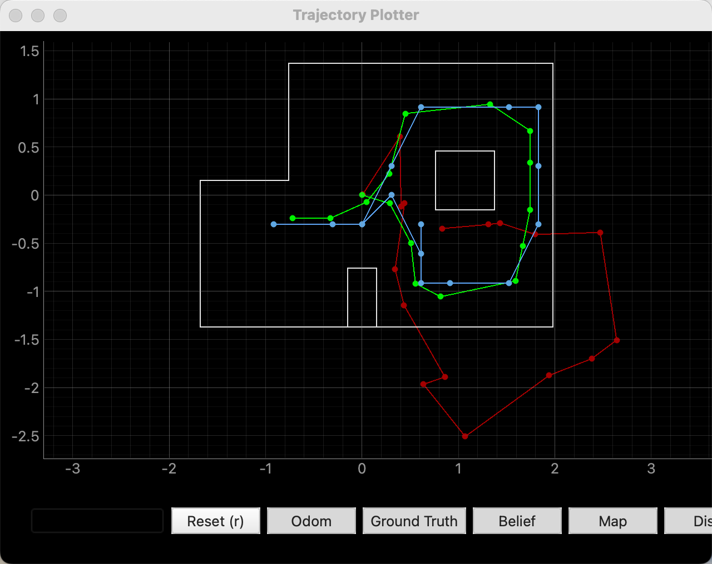
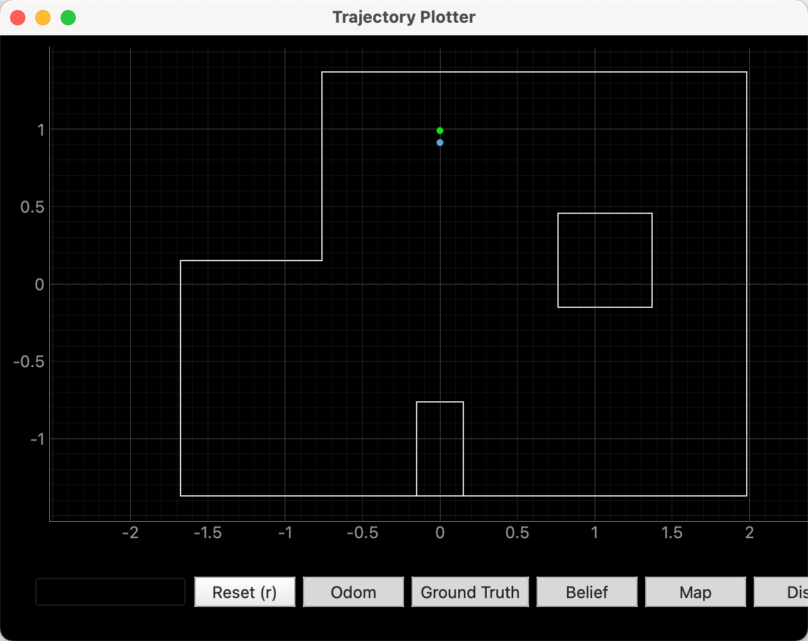
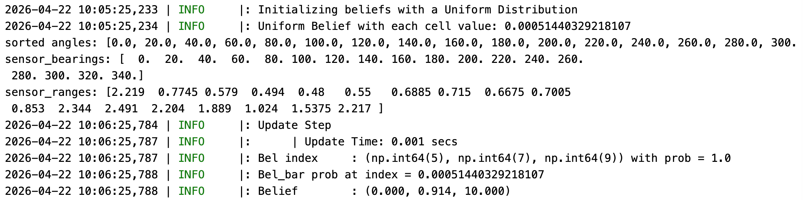
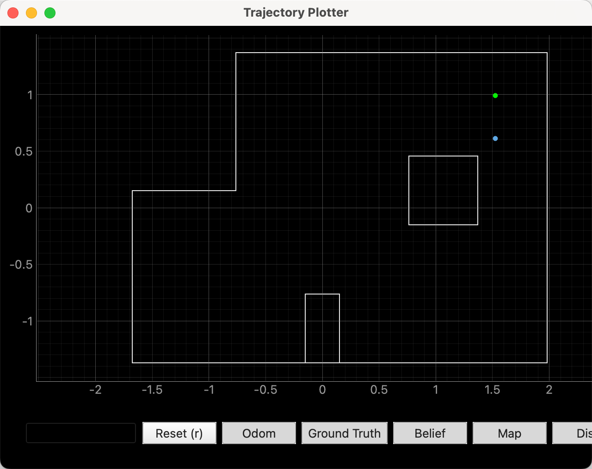
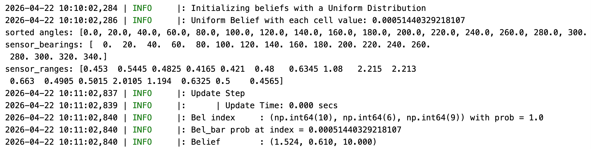
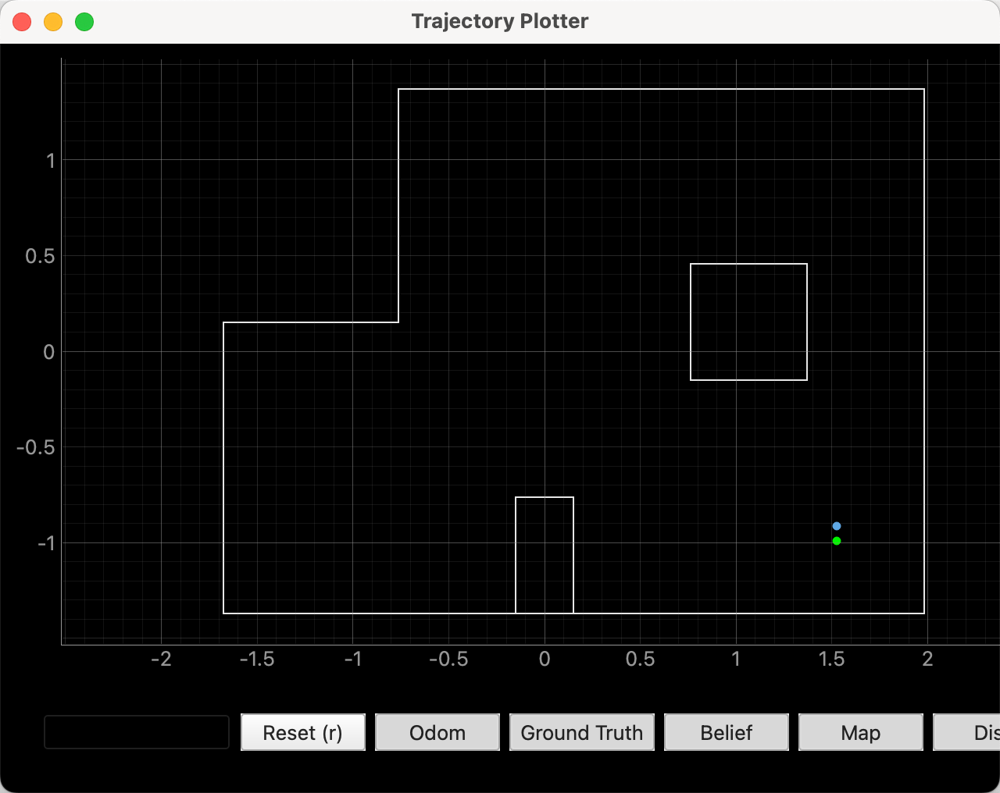
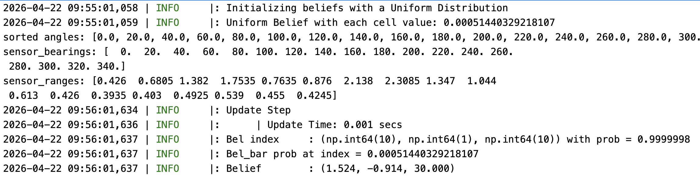
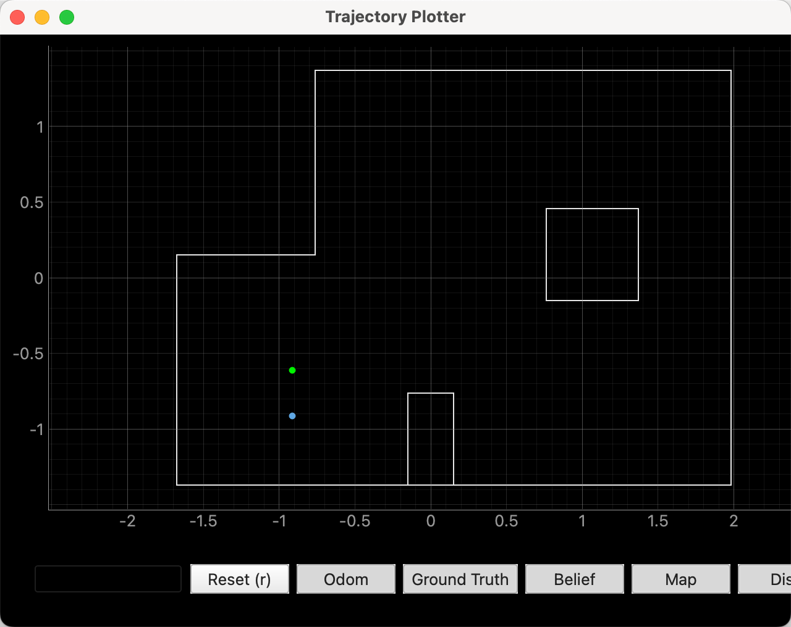
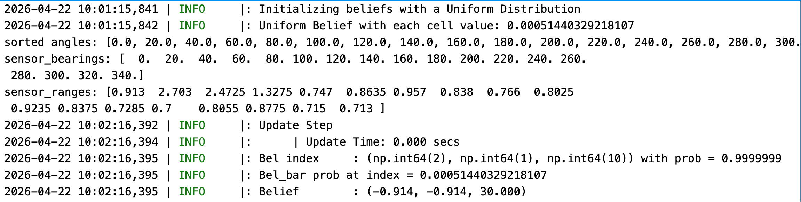

Objective
In this lab, we perform localization on the actual robot using the Bayes filter.
Lab Tasks
Bayes Filter (Sim)
First, I ran the provided lab11_sim.ipynb to verify the simulation results. From the figure, we can see that the simulated Bayes filter trajectory is as expected and performs much better than the odometry model.

Bayes Filter (Real)
In this part, the goal is to perform localization on the map using the real robot in the physical environment. To do this, I first implemented a function on the Arduino that makes the robot rotate through a full scan while collecting sensor data. Since I had already implemented a similar function in Lab 9, the main change here was to modify the scan parameters to 18 steps of 20 degrees each.
case MAP:
{
float Kp, Ki, Kd;
float step_deg;
int num_steps;
int stop_ms;
bool ok = true;
ok &= robot_cmd.get_next_value(Kp);
ok &= robot_cmd.get_next_value(Ki);
ok &= robot_cmd.get_next_value(Kd);
ok &= robot_cmd.get_next_value(step_deg);
ok &= robot_cmd.get_next_value(num_steps);
ok &= robot_cmd.get_next_value(stop_ms);
if (!ok) return;
stop();
delay(200);
calibrate_gyro_bias();
myICM.resetFIFO();
if (!init_yaw_zero()) {
Serial.println("Failed to initialize yaw zero");
return;
}
distanceSensorLeft.startRanging();
delay(50);
unsigned long scan_start_time = millis();
for (int seg = 0; seg < num_steps; seg++) {
float target_yaw = wrap_angle_deg(seg * step_deg);
// Phase 0: turning to target
while (map_n < MAP_DATA_NUM) {
float yaw_abs_now;
if (!read_dmp_yaw_latest(yaw_abs_now)) {
delay(1);
continue;
}
float current_yaw = wrap_angle_deg(yaw_abs_now - yaw_dmp_zero);
float yaw_rate = 0.0f;
if (myICM.dataReady()) {
myICM.getAGMT();
yaw_rate = myICM.gyrZ() - gyro_z_bias;
}
float pterm, iterm, dterm;
int u = pid_orientation_control(Kp, Ki, Kd,
current_yaw, target_yaw, yaw_rate,
pterm, iterm, dterm);
record_map_sample(scan_start_time, seg, 0, target_yaw,
current_yaw, yaw_rate, u);
float err = wrap_angle_deg(target_yaw - current_yaw);
if (fabs(err) < 2.0f) {
stop();
break;
}
}
// Phase 1: stop and record at target
stop();
unsigned long stop_start = millis();
while ((millis() - stop_start < (unsigned long)stop_ms) && map_n < MAP_DATA_NUM) {
float yaw_abs_now;
if (!read_dmp_yaw_latest(yaw_abs_now)) {
delay(1);
continue;
}
float current_yaw = wrap_angle_deg(yaw_abs_now - yaw_dmp_zero);
float yaw_rate = 0.0f;
if (myICM.dataReady()) {
myICM.getAGMT();
yaw_rate = myICM.gyrZ() - gyro_z_bias;
}
record_map_sample(scan_start_time, seg, 1, target_yaw,
current_yaw, yaw_rate, 0);
delay(2);
}
}
}
In the Lab 9 implementation, the robot collected data while rotating clockwise. However, in this lab, the localization framework assumes a counterclockwise angular convention, so I made the corresponding adjustment during Python data processing. After receiving the raw records, the Python code groups them by segment and prioritizes the stop-stage data (phase = 1), since these measurements are more stable. For each angular segment, I take the median of the multiple ToF readings as the final observation in that direction.
Because the robot scans in the clockwise direction while the localization module defines counterclockwise as positive, I converted the angle in Python using angle_new = (360 - angle) % 360. Then I reordered the observations into the sequence 0°, 20°, 40°, ..., 340°, which produced a length-18 sensor_ranges array and the corresponding sensor_bearings. These were then used as the input to the Bayes filter update step for real-robot localization.
def extract_observation_vector(records, observation_count=18):
cols = ["t", "seg", "phase", "target", "measured", "dist", "yaw_rate", "u"]
df = pd.DataFrame(records, columns=cols)
obs_angles = []
obs_ranges = []
for seg_id in range(observation_count):
sub = df[df["seg"] == seg_id]
sub_phase = sub[sub["phase"] == 1]
sub = sub_phase
angle = float(sub["target"].iloc[0])
rng = float(sub["dist"].median())
angle = (360 - angle) % 360
obs_angles.append(angle)
obs_ranges.append(rng)
pairs = sorted(zip(obs_angles, obs_ranges), key=lambda x: x[0])
obs_angles = [p[0] for p in pairs]
obs_ranges = [p[1] for p in pairs]
return obs_angles, obs_ranges
In perform_observation_loop, I implemented the full pipeline of sending commands, collecting data, and processing data. First, I used ble.command to send the rotation-and-scan instruction. After waiting for the scan to complete, the data was transmitted back to Python, processed, and then used for position estimation.
def perform_observation_loop(self, rot_vel=120):
global map_records
map_records = []
observation_count = 18
step_deg = 20.0
kp = 3.2
ki = 0.3
kd = 0.32
stop_ms = 300
payload = f"{kp}|{ki}|{kd}|{step_deg}|{observation_count}|{stop_ms}"
wait_time_s = observation_count * stop_ms / 1000.0 + 10.0
self.ble.start_notify(self.ble.uuid['RX_STRING'], map_notification_handler)
self.ble.send_command(CMD.MAP, payload)
time.sleep(wait_time_s)
self.ble.stop_notify(self.ble.uuid['RX_STRING'])
angles_deg, ranges_mm = extract_observation_vector(
map_records,
observation_count=observation_count
)
sensor_ranges = (np.array(ranges_mm, dtype=float) / 1000.0)[np.newaxis].T
sensor_bearings = np.array(angles_deg, dtype=float)[np.newaxis].T
return sensor_ranges, sensor_bearingsResults
In addition, I plotted the ground-truth position of the test point in the figure to make comparison easier. During the experiment, I initially found that the localization accuracy was very poor. After checking the implementation, I found that the ToF sensor was still using Short Mode, which could not provide accurate readings at longer distances and therefore caused localization errors. After switching the sensor to Long Mode, the robot was able to achieve much more accurate localization.
The final localization results are shown in the figure below. The Bayes filter successfully estimated the robot's position on the map.
The result of (0, 3)


The result of (5, 3)


The result of (5, -3)


The result of (-3, -2)


Reference
Thanks to Professor Helbling and the TAs for their help during lab sessions. I refer to Wenyi Fu's and Lucca Correia's websites as guidance and as references for web design. I used AI tools to help me with refining the writing and improving the clarity of my report.